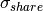
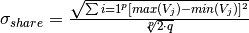
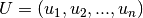
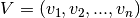
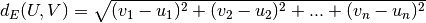
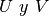

EuclideanDistanceVariables (script)¶
La Distancia Euclidiana (ó Euclidean Distance) es una implementación
de cálculo de distancia entre dos Individuos que pertenece a la subcategoría
Phenotypic Similarity (ó Similaridad Fenotípica).
En este caso se enfoca hacia las Variables de Decisión (ó Decision Variables)
que poseen cada uno de los Individuos (ó Individuals) de una Población (ó Population).
Para obtener el  se utiliza la siguiente fórmula:

Donde:
 es el número de variables de decisión.
es el número de variables de decisión. es el número de “picos” que el algoritmo debe encontrar. Este valor se deja a elección del usuario.
es el número de “picos” que el algoritmo debe encontrar. Este valor se deja a elección del usuario.Además en un inicio dentro de la raíz cuadrada del numerador se realiza la resta entre los valores máximo y mínimo para
cada variable de decisión elevada al cuadrado; esto por cada generación.
Para el cálculo de la distancia se utiliza el siguiente método:
Supongamos que tenemos los vectores  y . Entonces la Distancia Euclidiana se define como:

Para los fines que nos conciernen, los vectores  serán los valores de las variables de decisión
de cada Individuo participante.
Finalmente es menester mencionar que, aunque tradicionalmente esta técnica se usa para Representaciones Cromosómicas
(véase Model/ChromosomalRepresentation) de tipo FloatPoint (ó Punto Flotante), en sentido estricto no se encuentra
limitada sólo a este tipo de codificación.
-
calculate_distance(individual_i, individual_j, sharing_function_parameters)¶ Apoyándose de la técnica conocida como Distancia Euclidiana (ó Euclidean Distance) se implementa el cálculo de la distancia para dos Individuos cualesquiera.
Tomando en cuenta la información proporcionada al principio, se implementa el cálculo del Sigma Share.